夜の画面（画面案・3つ目の回・比べる用）
本命は design/night（PR #49）。同じ指示を3つの回が同時に作ったうちの1つ。
11/8 23時の本人の決定：決まりなしの実験の案B「夜の操縦席」を、夜だけのアプリ全体の見た目にする。いる場所の日の入り〜日の出は自動で夜、マイページで「自動／いつも昼／いつも夜」。1月の公開に入れる。アプリのコードは変えていない。
案B から直したこと
- 本文・見出し・ボタンの字はふだんのゴシック体。等幅の計器の字は数字だけ、光らせる（うっすら光の影）のも数字だけ
- 光る色は緑と琥珀の2つ（案B は4色）。緑＝計器の数字・選んでいるもの・実績・特別塗装機、琥珀＝押してほしい所・判定範囲・予定・閉まる時刻
- 字と地の差はどれも 4.5:1 以上。本文は真っ白にしない（#D3DBE4）。広い明るい面・塗りつぶしの明るいボタンを置かない
- 画面の組み立て（ホームは地図とシート・マイページはタイル・タブ5つ・見方の帯）は昼と同じ。出発案内板風は昼と同じ2か所（近い空港のコード・最近の印）だけ
- 形は今の決まり（角丸のカード・ピルのボタン）に戻した。黒の上では影が見えないので、影のかわりに1px の内側のふち
画面（幅390）
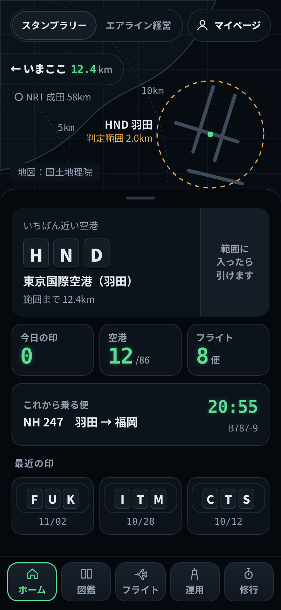
N1 ホーム地図とシート・夜の航空図・距離の輪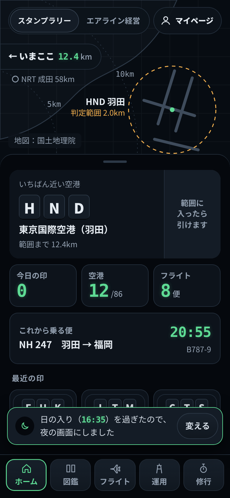
N1b 自動で夜になった直後日の入りを過ぎたとき1回だけの知らせ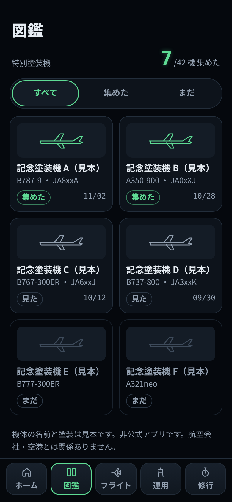
N2 図鑑特別塗装機だけ・集めた＝緑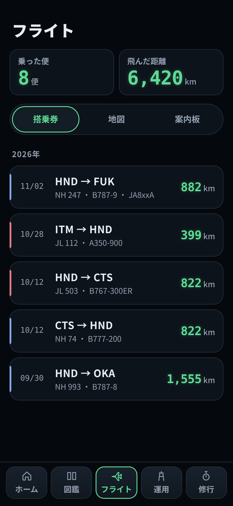
N3 フライト見方の帯・会社の色は細い線だけ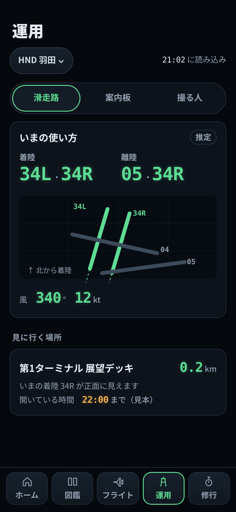
N4 運用滑走路・使っている向きは緑・閉まる時刻は琥珀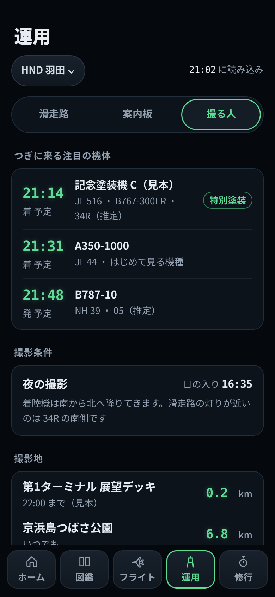
N4b 運用・撮る人の見方つぎに来る注目の機体・撮影条件・撮影地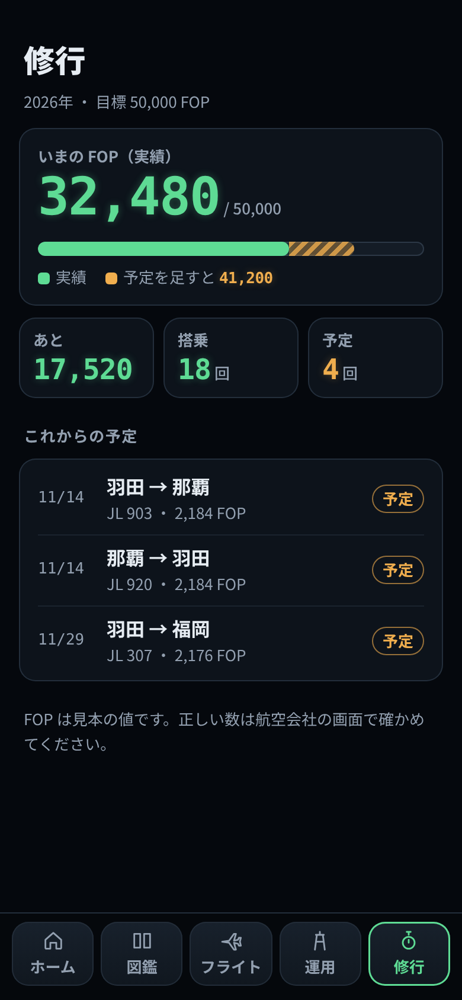
N5 修行実績＝緑・予定＝琥珀の縞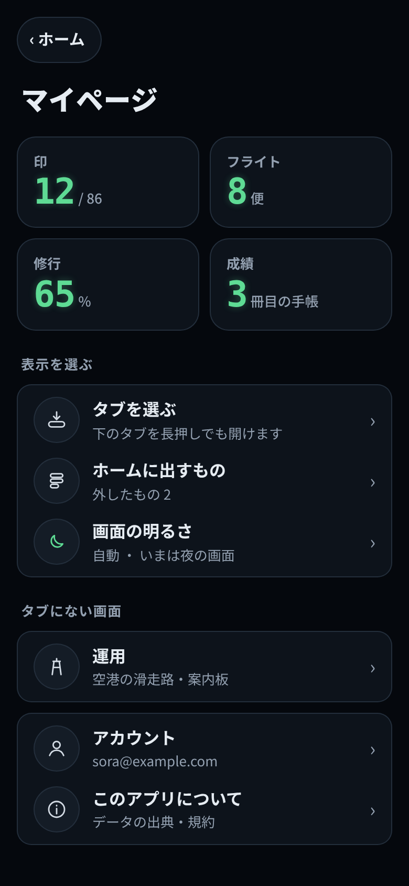
N6 マイページタイル＋「画面の明るさ」の行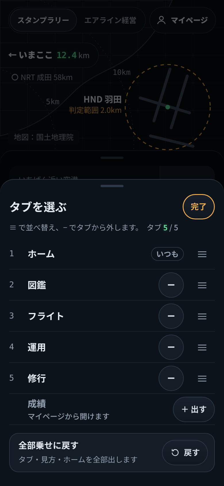
N7 タブを選ぶC1-v2 を夜の色で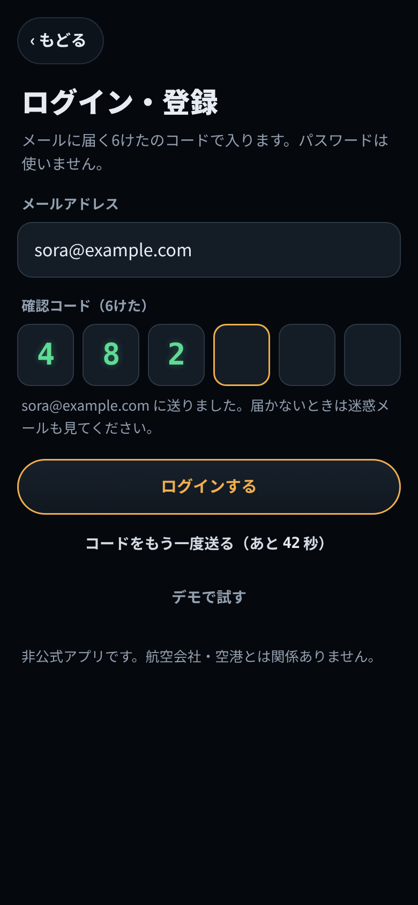
N8 ログイン確認コード6けた・押すのは琥珀のふち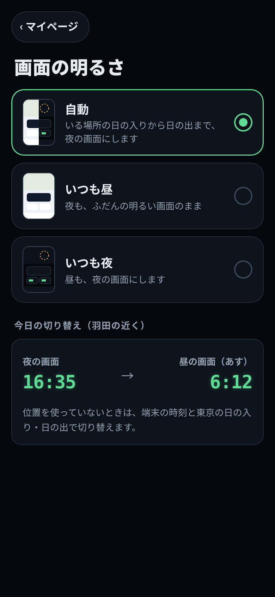
N9 画面の明るさ自動／いつも昼／いつも夜色（くわしくは tokens.md・そのまま使える CSS は tokens.css）
#05080D地 --n-bg
#0D131Bカード --n-panel
#141C26ボタン --n-panel2
#232E3Bふち --n-bezel
#D3DBE4本文 --n-ink
#93A0B0補足 --n-sub
#5EDB94光る色1 緑 --n-g
#F0AE4E光る色2 琥珀 --n-a
測った値
幅390・高さ844と667 の11画面：13px 未満の字 0／字と地の差 4.5:1 未満 0／押せる所 44px 未満 0／横のはみ出し 0。
タブ帯と重なる字は、844 ではホーム・図鑑など10画面で 0（撮る人の見方はいちばん下の撮影地と注意書きが帯の下に入る＝送って見る所）。667 では一覧の続きが帯の下に入る（送って見る）。
タブ帯と重なる字は、844 ではホーム・図鑑など10画面で 0（撮る人の見方はいちばん下の撮影地と注意書きが帯の下に入る＝送って見る所）。667 では一覧の続きが帯の下に入る（送って見る）。
各画面の HTML の下に黄色のメモ（本番には出ません）。機体の名前・FOP・時刻・展望デッキの時間は見本。非公式アプリ。